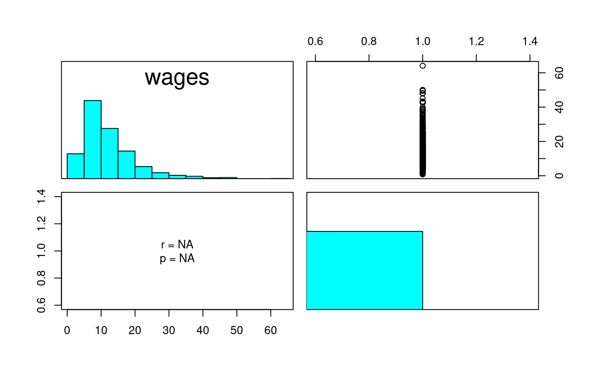
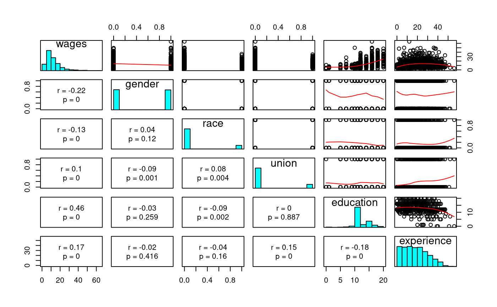

Descriptive Statistics
descriptives( X, y, varnamesX = NULL, varnamey = NULL, plot = TRUE, moments = TRUE, cor = TRUE, mardia = TRUE )
| X |
|
|---|---|
| y | Numeric vector of length |
| varnamesX | Optional. Character vector of length |
| varnamey | Optional. Character string.
Variable name for vector |
| plot | Logical. Display scatter plot matrix. |
| moments | Logical. Print central moments (means, standard deviations, skewness, and kurtosis). |
| cor | Logical. Print correlations. |
| mardia | Logical. Estimate Mardia's multivariate skewness and kurtosis. |
Returns descriptive statistics useful in k-variable linear regression model.
# Simple regression------------------------------------------------ X <- jeksterslabRdatarepo::wages.matrix[["X"]] X <- X[, c(1, ncol(X))] y <- jeksterslabRdatarepo::wages.matrix[["y"]] out <- descriptives(X = X, y = y)#> #> Central Moments: #> Mean SD Skewness Kurtosis #> wages 12.36585 7.89635 1.8502679 4.8600481 #> age 37.93483 11.49428 0.2698983 -0.7668824 #> #> Mardia's Estimate of Multivariate Skewness and Kurtosis: #> b1 b1.chisq b1.correction b1.chisq.corrected #> 3.875204e+00 8.325230e+02 1.002329e+00 8.344616e+02 #> b1.df b1.p b1.p.corrected b2 #> 4.000000e+00 6.923720e-179 2.632596e-179 1.264530e+01 #> b2.z b2.p #> 2.084732e+01 1.611861e-96 #> #> Correlations: #> wages age #> wages 1.0000000 0.2874694 #> age 0.2874694 1.0000000str(out)#> List of 27 #> $ X : num [1:1289, 1:2] 1 1 1 1 1 1 1 1 1 1 ... #> ..- attr(*, "dimnames")=List of 2 #> .. ..$ : NULL #> .. ..$ : chr [1:2] "constant" "age" #> $ y : num [1:1289, 1] 11.6 5 12 7 21.1 ... #> ..- attr(*, "dimnames")=List of 2 #> .. ..$ : NULL #> .. ..$ : chr "wages" #> $ data : num [1:1289, 1:2] 11.6 5 12 7 21.1 ... #> ..- attr(*, "dimnames")=List of 2 #> .. ..$ : NULL #> .. ..$ : chr [1:2] "wages" "age" #> $ n : int 1289 #> $ k : int 2 #> $ p : num 1 #> $ df1 : num 1 #> $ df2 : int 1287 #> $ muhatX : Named num 37.9 #> ..- attr(*, "names")= chr "age" #> $ muhaty : Named num 12.4 #> ..- attr(*, "names")= chr "wages" #> $ mu : Named num [1:2] 12.4 37.9 #> ..- attr(*, "names")= chr [1:2] "wages" "age" #> $ R : num [1:2, 1:2] 1 0.287 0.287 1 #> ..- attr(*, "dimnames")=List of 2 #> .. ..$ : chr [1:2] "wages" "age" #> .. ..$ : chr [1:2] "wages" "age" #> $ R.p : num [1:2, 1:2] NA 6.02e-26 6.02e-26 NA #> ..- attr(*, "dimnames")=List of 2 #> .. ..$ : chr [1:2] "wages" "age" #> .. ..$ : chr [1:2] "wages" "age" #> $ RX : num 1 #> $ ryX : Named num 0.287 #> ..- attr(*, "names")= chr "age" #> $ Sigma : num [1:2, 1:2] 62.4 26.1 26.1 132.1 #> ..- attr(*, "dimnames")=List of 2 #> .. ..$ : chr [1:2] "wages" "age" #> .. ..$ : chr [1:2] "wages" "age" #> $ SigmaX : num 132 #> $ sigmayX: Named num 26.1 #> ..- attr(*, "names")= chr "age" #> $ sigma2X: num 132 #> $ sigma2y: Named num 62.4 #> ..- attr(*, "names")= chr "wages" #> $ sigmaX : Named num 11.5 #> ..- attr(*, "names")= chr "age" #> $ sigmay : Named num 7.9 #> ..- attr(*, "names")= chr "wages" #> $ sigma2 : Named num [1:2] 62.4 132.1 #> ..- attr(*, "names")= chr [1:2] "wages" "age" #> $ sigma : Named num [1:2] 7.9 11.5 #> ..- attr(*, "names")= chr [1:2] "wages" "age" #> $ skew : Named num [1:2] 1.85 0.27 #> ..- attr(*, "names")= chr [1:2] "wages" "age" #> $ kurt : Named num [1:2] 4.86 -0.767 #> ..- attr(*, "names")= chr [1:2] "wages" "age" #> $ mardia : Named num [1:10] 3.88 832.52 1 834.46 4 ... #> ..- attr(*, "names")= chr [1:10] "b1" "b1.chisq" "b1.correction" "b1.chisq.corrected" ...# Multiple regression---------------------------------------------- X <- jeksterslabRdatarepo::wages.matrix[["X"]] # age is removed X <- X[, -ncol(X)] out <- descriptives(X = X, y = y)#> #> Central Moments: #> Mean SD Skewness Kurtosis #> wages 12.3658495 7.8963503 1.85026794 4.8600481 #> gender 0.4972847 0.5001867 0.01087395 -2.0029920 #> race 0.1528317 0.3599648 1.93189913 1.7349237 #> union 0.1590380 0.3658535 1.86682302 1.4873335 #> education 13.1450737 2.8138234 -0.29071984 2.9937154 #> experience 18.7897595 11.6628366 0.37610718 -0.6699994 #> #> Mardia's Estimate of Multivariate Skewness and Kurtosis: #> b1 b1.chisq b1.correction b1.chisq.corrected #> 1.253254e+01 2.692407e+03 1.002328e+00 2.698674e+03 #> b1.df b1.p b1.p.corrected b2 #> 5.600000e+01 0.000000e+00 0.000000e+00 5.848385e+01 #> b2.z b2.p #> 1.920797e+01 3.174381e-82 #> #> Correlations: #> wages gender race union education #> wages 1.0000000 -0.22330183 -0.12783381 0.102246656 0.456517980 #> gender -0.2233018 1.00000000 0.04327185 -0.088856935 -0.031439159 #> race -0.1278338 0.04327185 1.00000000 0.080587911 -0.087061729 #> union 0.1022467 -0.08885694 0.08058791 1.000000000 0.003966952 #> education 0.4565180 -0.03143916 -0.08706173 0.003966952 1.000000000 #> experience 0.1731733 -0.02265681 -0.03912910 0.154319024 -0.180103012 #> experience #> wages 0.17317330 #> gender -0.02265681 #> race -0.03912910 #> union 0.15431902 #> education -0.18010301 #> experience 1.00000000str(out)#> List of 27 #> $ X : num [1:1289, 1:6] 1 1 1 1 1 1 1 1 1 1 ... #> ..- attr(*, "dimnames")=List of 2 #> .. ..$ : NULL #> .. ..$ : chr [1:6] "constant" "gender" "race" "union" ... #> $ y : num [1:1289, 1] 11.6 5 12 7 21.1 ... #> ..- attr(*, "dimnames")=List of 2 #> .. ..$ : NULL #> .. ..$ : chr "wages" #> $ data : num [1:1289, 1:6] 11.6 5 12 7 21.1 ... #> ..- attr(*, "dimnames")=List of 2 #> .. ..$ : NULL #> .. ..$ : chr [1:6] "wages" "gender" "race" "union" ... #> $ n : int 1289 #> $ k : int 6 #> $ p : num 5 #> $ df1 : num 5 #> $ df2 : int 1283 #> $ muhatX : Named num [1:5] 0.497 0.153 0.159 13.145 18.79 #> ..- attr(*, "names")= chr [1:5] "gender" "race" "union" "education" ... #> $ muhaty : Named num 12.4 #> ..- attr(*, "names")= chr "wages" #> $ mu : Named num [1:6] 12.366 0.497 0.153 0.159 13.145 ... #> ..- attr(*, "names")= chr [1:6] "wages" "gender" "race" "union" ... #> $ R : num [1:6, 1:6] 1 -0.223 -0.128 0.102 0.457 ... #> ..- attr(*, "dimnames")=List of 2 #> .. ..$ : chr [1:6] "wages" "gender" "race" "union" ... #> .. ..$ : chr [1:6] "wages" "gender" "race" "union" ... #> $ R.p : num [1:6, 1:6] NA 4.98e-16 4.14e-06 2.36e-04 2.35e-67 ... #> ..- attr(*, "dimnames")=List of 2 #> .. ..$ : chr [1:6] "wages" "gender" "race" "union" ... #> .. ..$ : chr [1:6] "wages" "gender" "race" "union" ... #> $ RX : num [1:5, 1:5] 1 0.0433 -0.0889 -0.0314 -0.0227 ... #> ..- attr(*, "dimnames")=List of 2 #> .. ..$ : chr [1:5] "gender" "race" "union" "education" ... #> .. ..$ : chr [1:5] "gender" "race" "union" "education" ... #> $ ryX : Named num [1:5] -0.223 -0.128 0.102 0.457 0.173 #> ..- attr(*, "names")= chr [1:5] "gender" "race" "union" "education" ... #> $ Sigma : num [1:6, 1:6] 62.352 -0.882 -0.363 0.295 10.143 ... #> ..- attr(*, "dimnames")=List of 2 #> .. ..$ : chr [1:6] "wages" "gender" "race" "union" ... #> .. ..$ : chr [1:6] "wages" "gender" "race" "union" ... #> $ SigmaX : num [1:5, 1:5] 0.25019 0.00779 -0.01626 -0.04425 -0.13217 ... #> ..- attr(*, "dimnames")=List of 2 #> .. ..$ : chr [1:5] "gender" "race" "union" "education" ... #> .. ..$ : chr [1:5] "gender" "race" "union" "education" ... #> $ sigmayX: Named num [1:5] -0.882 -0.363 0.295 10.143 15.948 #> ..- attr(*, "names")= chr [1:5] "gender" "race" "union" "education" ... #> $ sigma2X: Named num [1:5] 0.25 0.13 0.134 7.918 136.022 #> ..- attr(*, "names")= chr [1:5] "gender" "race" "union" "education" ... #> $ sigma2y: Named num 62.4 #> ..- attr(*, "names")= chr "wages" #> $ sigmaX : Named num [1:5] 0.5 0.36 0.366 2.814 11.663 #> ..- attr(*, "names")= chr [1:5] "gender" "race" "union" "education" ... #> $ sigmay : Named num 7.9 #> ..- attr(*, "names")= chr "wages" #> $ sigma2 : Named num [1:6] 62.352 0.25 0.13 0.134 7.918 ... #> ..- attr(*, "names")= chr [1:6] "wages" "gender" "race" "union" ... #> $ sigma : Named num [1:6] 7.896 0.5 0.36 0.366 2.814 ... #> ..- attr(*, "names")= chr [1:6] "wages" "gender" "race" "union" ... #> $ skew : Named num [1:6] 1.8503 0.0109 1.9319 1.8668 -0.2907 ... #> ..- attr(*, "names")= chr [1:6] "wages" "gender" "race" "union" ... #> $ kurt : Named num [1:6] 4.86 -2 1.73 1.49 2.99 ... #> ..- attr(*, "names")= chr [1:6] "wages" "gender" "race" "union" ... #> $ mardia : Named num [1:10] 12.5 2692.4 1 2698.7 56 ... #> ..- attr(*, "names")= chr [1:10] "b1" "b1.chisq" "b1.correction" "b1.chisq.corrected" ...